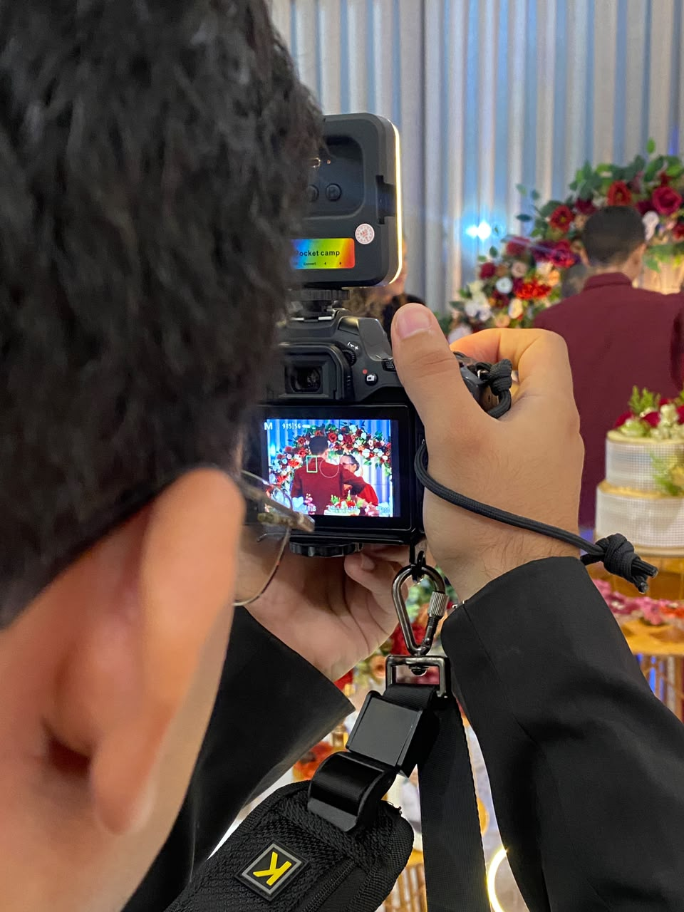

Sobre o ensaio
Este projeto foi pensado para traduzir a intensidade da performance ao vivo em imagens marcantes. A direção visual buscou destacar luz, expressão, movimento e conexão com o público.
Registro visual de apresentação musical, destacando presença de palco, emoção e atmosfera do evento.

Este projeto foi pensado para traduzir a intensidade da performance ao vivo em imagens marcantes. A direção visual buscou destacar luz, expressão, movimento e conexão com o público.
